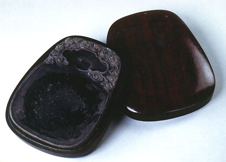

義助慰安婦 —— 李敖百件珍藏義賣藝術品（第36件） 品 名： C5. 掐絲硯 預估價： 30 萬 成交價： 30 萬 說 明： 這是一塊罕見的硯台，蓋子是木製的，上有金屬的字，其製法是將金屬字釘在木頭上，故名掐絲，因此盒子與硯台一樣有名。此硯台李敖常用，墨未洗掉，義買者不但可買到硯台，還可買到李敖剩下的墨澤。 
這是一塊罕見的硯台，蓋子是木製的，上有金屬的字，其製法是將金屬字釘在木頭上，故名掐絲，因此盒子與硯台一樣有名。此硯台李敖常用，墨未洗掉，義買者不但可買到硯台，還可買到李敖剩下的墨澤。